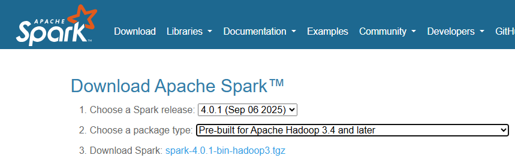

In this lecture, We will try to set up local Spark Development environment.
Here is the list of things that you need:
JDK 8 or JDK 11
Python 3.6 or higher
Hadoop WinUtils
Spark Binaries
Environment Variables
Python IDE
Let's start with the JDK installation.
Spark is a JVM application. It runs in a Java Virtual machine. You might write code in Python, but Spark runs most things in a Java Virtual Machine. So you need JDK on your local machine for installing and running your Spark application.
The current most recent Java is JDK 26, However, as of today, Spark supports JDK 8 or JDK 11.
Let's see how to install JDK 11 on your local machine.
Visit jdk.java.net and download Java SE 11 from list of all available versions.
Extract it, copy the JDK-11 folder and paste it at c:\program files\Java. Create a folder with name Java if not created already.
We have to set up two environment variables to make it work. Let add the environment variable using cmd.
Open cmd.
Type setx JAVA_HOME "C:\Program Files\Java\jdk-11.0.0.2" and hit enter. You will see the screen like below:
C:\Users\user_name>setx JAVA_HOME "C:\Program Files\Java\jdk-11.0.0.2" SUCCESS: Specified value was saved.
The second requirement is to add the JAVA_HOME\bin to your PATH environment variable. You can add using the command:
setx PATH "%PATH%;%JAVA_HOME%\bin"
C:\Users\user_name>setx PATH "%PATH%;%JAVA_HOME%\bin" SUCCESS: Specified value was saved.
You can exit the command prompt, restart it and test your JDK.
C:\Users\user_name>java -versions openjdk version "11.0.0.2" 2024-07-02 OpenJDK Runtime Environment 18.9 (build 11.0.0.2+2-2) OpenJDK 64-Bit Server VM 18.9 (build 11.0.0.2+2-2, mixed mode)
Spark was initially developed to run on Linux-based Hadoop systems. It didn't work on Windows machines. If you try, it throws the following error. You might also see some file permission errors. However, the open-source community created winutils to fix those issues and allow us to run Spark on a windows machine. So we need winutils.
Lets download it.
Start browser and serach for Hadoop winutils, you will see a github link Hadoop Winutils.
You can click on green-colored Code button and select Download Zip. Extract it. You will see the winutils-master directory.
Go inside, and you will see many other folders. Copy the latest version folder and pasting it at another permanent location.
Now add environment variables using cmd
setx HADOOP_HOME "C:\HadoopWinutils\hadoop-3.3.6"
C:\Users\user_name>setx HADOOP_HOME "C:\HadoopWinutils\hadoop-3.3.6" SUCCESS: Specified value was saved.
Now add it to the PATH environment variable.
setx PATH "%PATH%;%HADOOP_HOME%\bin"
C:\Users\user_name>setx PATH "%PATH%;%HADOOP_HOME%\bin" SUCCESS: Specified value was saved.
Visit https://spark.apache.org/
Click Download and choose the compatible Spark release and a package type.
Finall, You can choose the download link to start the download.

After complete download, you can extract the .tgz or .zip and paste the directory in some permanent location.
Next step is to set the environment variables. start your command prompt and use the setx command to set the SAPRK_HOME environment variable.
setx SPARK_HOME "C:\spark-3.4.1" and hit enter.
C:\Users\user_name>setx SPARK_HOME "C:\spark-3.4.1" SUCCESS: Specified value was saved.
We should also add the SPARK_HOME\bin to our PATH environment variable.
setx PATH "%PATH%;%SPARK_HOME%\bin" and hit enter.
C:\Users\user_name>setx PATH "%PATH%;%SPARK_HOME%\bin" SUCCESS: Specified value was saved.
If you see any WARNING: The data being saved is truncated to 1024 characters, then you can add this path(C:\spark-4.0.1\bin) using windows UI in your environment vriable PATH.
Ideally, you should be done here setting up Spark on your local machine. Few more patches are required, but Spark should start working on the local machine for most of the users. However, you can test it and see if Spark on local started working.
Start the command prompt and try running the pyspark. You should see some messages and finally a command prompt. If you see a command prompt and no error messages, you are good to go.
However, If you see any error running your PySpark shell, you may want to set up the following environment variables.
In fact, I recommend setting up these environment variables even if you do not see any error running your pyspark shell.
Start your command prompt and set the PYTHONPATH environment variable.
setx PYTHONPATH "C:\spark-3.4.1\python;C:\spark-3.4.1\python\lib\py4j-0.10.9.7-src.zip"
C:\Users\user_name>setx PYTHONPATH "C:\spark-3.4.1\python;C:\spark-3.4.1\python\lib\py4j-0.10.9.7-src.zip" SUCCESS: Specified value was saved.
We also need to set up the PYSPARK_PYTHON variable. But before that, We need to see Python installation location using where command and use that path to configure Spark.
setx PYSPARK_PYTHON "C:\Program Files\Python39\python.exe"
C:\Users\user_name>setx PYSPARK_PYTHON "C:\Program Files\Python39\python.exe" SUCCESS: Specified value was saved.
You can check your pyspark by running pyspark in your cmd.
You can use Pycharm IDE and or any other you feel comfortable with.
If you writing your spark program in Pycharm, make sure you have pyspark installed in your python packages. If you do not have, please install it.
from pyspark.sql import SparkSession if __name__ == '__main__': spark = SparkSession.builder \ .appName("Hello Spark") \ .master("local[2]") \ .getOrCreate() data_lst = [("Ravi", 28), ("David", 20), ("Abdul", 32)] df = spark.createDataFrame(data_lst).toDF("Name", "Age") df.show()
SparkSession.builder: Starts building a Spark session.
.appName("Hello Spark"): Names your Spark application.
.master("local[2]"): Runs Spark locally using 2 threads (good for testing). Think of threads like workers: each one can perform a task independently. More threads = more parallelism (up to the limits of your CPU).
.getOrCreate(): Creates a new Spark session or reuses an existing one.
createDataFrame(data_lst): Converts your list into a Spark DataFrame.
.toDF("Name", "Age"): Assigns column names: "Name" and "Age".
Output
+-----+---+ | Name|Age| +-----+---+ | Ravi| 28| |David| 20| |Abdul| 32| +-----+---+